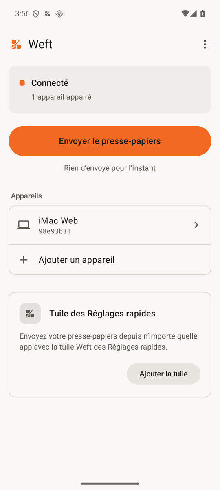
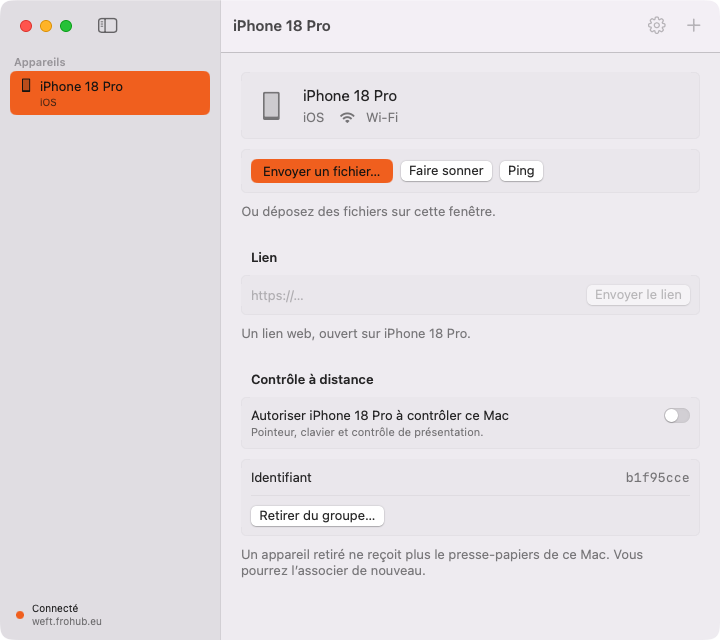
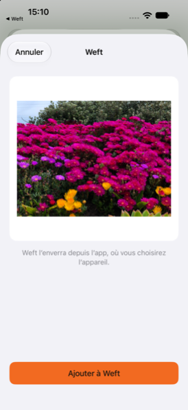
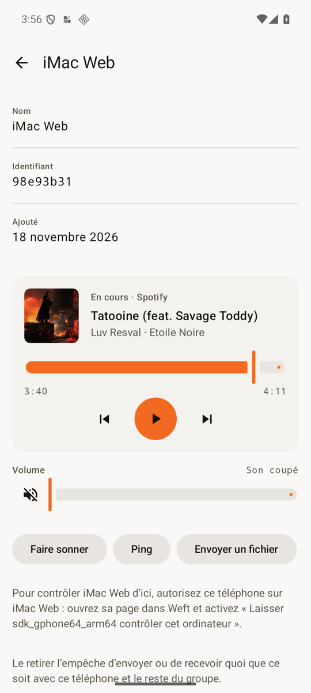
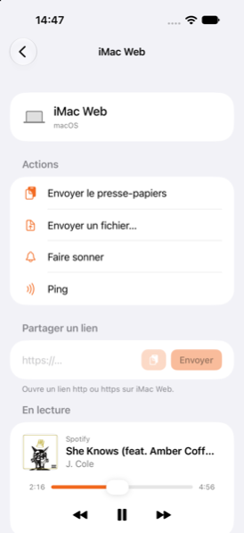

Copiez ici. Collez là-bas.
Texte, images et fichiers passent d’un appareil à l’autre, chiffrés.

TexteRendez-vous quai Saint‑Antoine, 14 h
Copiersur le téléphone

TexteRendez-vous quai Saint‑Antoine, 14 h
Collersur le Mac, ⌘V
Plus qu’un presse-papiers.
-

Partager
Photos, fichiers et liens, depuis n’importe quelle app.
-

Piloter
La musique et le volume de l’ordinateur, depuis le téléphone.
-

Retrouver
Faites sonner l’autre appareil, ou envoyez-lui un fichier.
Le relais transporte.
Il ne lit rien.
- Chiffré sur l’appareil
- XChaCha20-Poly1305, libsodium. Le relais ne voit que qui parle à qui, et quand.
- Sans compte
- Chaque installation crée ses clés. On associe par QR code.
- Votre relais, si vous voulez
- Une image Docker, une adresse à changer. Le relais public